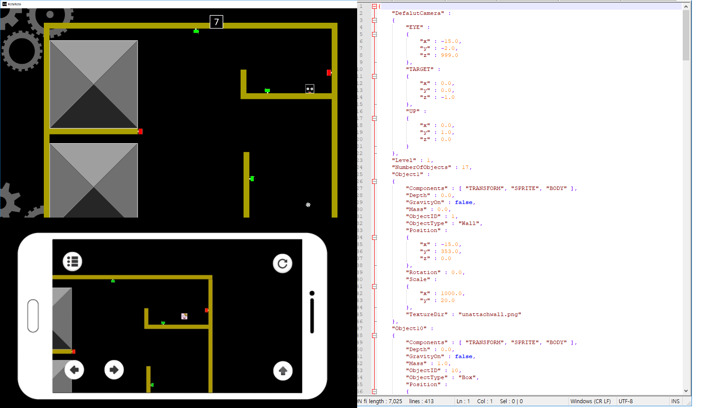
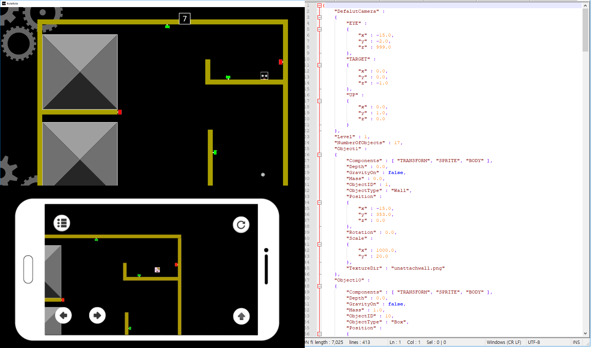
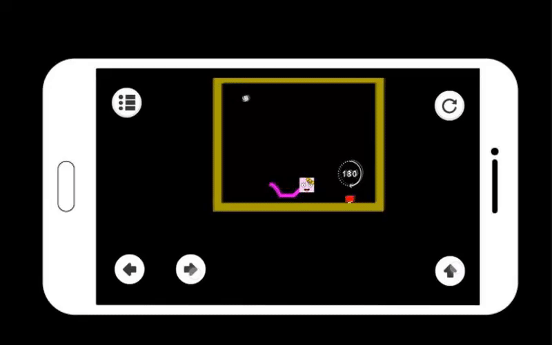

Project Duration: 2018.6 ~ 2018.8
Game Genre : 2D Platformer Puzzle Game- Used Engine : Unity Engine
- Used Language : C#
- Platform : Android
- Milestone : Beta
- Made by BeomGeun Choi
 

1.Level Generating with a Json File
Using LitJson,Previous levels from PC version of RoteRote can be loaded with a Unity engine
Certain prefabs will be spawned as its object style.
2.World Rotation Trigger

If it collides with the player, Screen will be rotated with a designated degrees.
3.Implementation of Game Logics
If player collides with a clearzone,the next level will be loaded
If there are more than three collision points between player and the falling box, it means that player is buried under the box and game will be restarted
4.Player Controller

Implementations of Horizontal movement, Wall Jump, Jump Force as the level of pressing the key
If the angle of camera is changed, player contorller will be changed
There are various properties in the player contorller so detail setting of contorller is available.
5. Implementation of UI
In the game,there are UIs for restarting the game, switching the level selection state.
6. Implementation of a Main Menu, Level Selecting, Option state

In the Main menu, there are level selection, option state, quitting the game.
In the level selection, excuting a certain level and returning to the main menu are available
In the Option State,sound mute / unmute and showing the credit are available
This is a personal mobile game project using Unity Engine. For 2.5 years, I developed only PC games. Now I would like to make a mobile game so I decided to make Mobile version of RoteRote which is my favorite team project. I implemented All of PC version of RoteRote with a Unity Engine
© This webpage is formatted by TEMPLATED.co